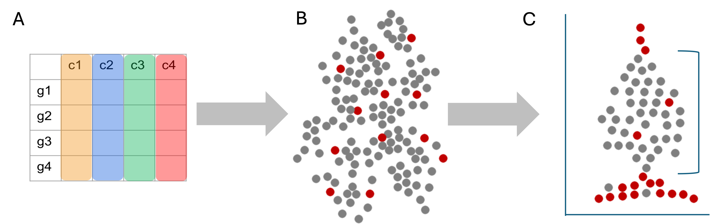

Workflow Overview

Introduction
As discussed at the start of the workshop, single-cell experiments
using 10x Chromium instrument aim to have droplets with one cell plus
one bead. However this is an inherently imperfect process and there are
other important considerations like how healthy or intact the cell was
at the time of measurement.
In this section, our goal is to use filtering thresholds to remove
“cells” that were poorly measured, not cells at all, or included more
than one cell.
|

|
|
The Cell Ranger barcode feature matrix outputs (A) is a mix of good and
poor quality cells (B). We can use expression patterns to further
visualize and filter to the subset of putative healthy cells (C) to
improve downstream analysis.
|
Similar to many other areas of research, there are often gaps
between how single-cell data is presented versus the reality of running
an analysis. For example, only the final filtering thresholds might be
reported in a paper but our process for choosing those is likely to be
more iterative and include some trial and error.
Objectives
- Discuss QC measures and learn how to calculate and plot them.
- Discuss cell-filtering approaches and apply them to our
dataset.
Adding metadata
We’re going to alter and add some columns to meta.data
to ease some downstream analysis and plotting steps. This will often be
necessary, as sample names contain combined information about
phenotypes. Let’s take a look at the first few rows again, to reacquaint
ourselves.
head(geo_so@meta.data)
orig.ident nCount_RNA nFeature_RNA
HODay0replicate1_AAACCTGAGAGAACAG-1 HODay0replicate1 10234 3226
HODay0replicate1_AAACCTGGTCATGCAT-1 HODay0replicate1 3158 1499
HODay0replicate1_AAACCTGTCAGAGCTT-1 HODay0replicate1 13464 4102
HODay0replicate1_AAACGGGAGAGACTTA-1 HODay0replicate1 577 346
HODay0replicate1_AAACGGGAGGCCCGTT-1 HODay0replicate1 1189 629
HODay0replicate1_AAACGGGCAACTGGCC-1 HODay0replicate1 7726 2602
We can add arbitrary per-cell information to this table such as:
- Summary statistics, such as percent mitochondrial reads for each
cell.
- Batch, condition, etc. for each cell.
- Cluster membership for each cell.
- Cell cycle phase for each cell.
- Other custom annotations for each cell.
The following code chunk will create new columns from the
orig.ident column, one for the day and one for
the replicate. We’ll also use factors to make the days
appear in the correct order (by default R will order them Day0, Day21,
Day7).
# Make metadata more granular, this is a quality of life thing
orig.ident_levels = apply(
expand.grid(c('HO'), c('replicate1', 'replicate2', 'replicate3', 'replicate4'), c('Day0','Day7','Day21')),
MARGIN = 1, FUN = function(row){paste(row[1], row[3], row[2], sep = '.')})
tmp_meta = geo_so@meta.data
tmp_meta$orig.ident = gsub('HO', 'HO.', tmp_meta$orig.ident)
tmp_meta$orig.ident = gsub('rep', '.rep', tmp_meta$orig.ident)
tmp_meta$orig.ident = factor(tmp_meta$orig.ident, levels = orig.ident_levels)
# Add day information
tmp_meta$day = factor(str_split(tmp_meta$orig.ident, pattern = '[.]', simplify = TRUE)[,2], levels = c('Day0', 'Day7', 'Day21'))
# Add replicate column
tmp_meta$replicate = str_split(tmp_meta$orig.ident, pattern = '[.]', simplify = TRUE)[,3]
# Assign the updated metadata to that in the Seurat object
geo_so@meta.data = tmp_meta
# Set the Idents(geo_so) to the new orig.ident
Idents(geo_so) = 'orig.ident'
Taking a look at the result, we see orig.ident looks a
little different, and we have new day and
replicate columns. Note that there are many ways to have
accomplished this, the above code is just one route.
head(geo_so@meta.data)
orig.ident nCount_RNA nFeature_RNA
HODay0replicate1_AAACCTGAGAGAACAG-1 HO.Day0.replicate1 10234 3226
HODay0replicate1_AAACCTGGTCATGCAT-1 HO.Day0.replicate1 3158 1499
HODay0replicate1_AAACCTGTCAGAGCTT-1 HO.Day0.replicate1 13464 4102
HODay0replicate1_AAACGGGAGAGACTTA-1 HO.Day0.replicate1 577 346
HODay0replicate1_AAACGGGAGGCCCGTT-1 HO.Day0.replicate1 1189 629
HODay0replicate1_AAACGGGCAACTGGCC-1 HO.Day0.replicate1 7726 2602
day replicate
HODay0replicate1_AAACCTGAGAGAACAG-1 Day0 replicate1
HODay0replicate1_AAACCTGGTCATGCAT-1 Day0 replicate1
HODay0replicate1_AAACCTGTCAGAGCTT-1 Day0 replicate1
HODay0replicate1_AAACGGGAGAGACTTA-1 Day0 replicate1
HODay0replicate1_AAACGGGAGGCCCGTT-1 Day0 replicate1
HODay0replicate1_AAACGGGCAACTGGCC-1 Day0 replicate1
Percent mitochondrial reads
The PercentageFeatureSet() function enables us to
quickly determine the counts belonging to a subset of the possible
features for each cell. Since mitochondrial transcripts in mouse begin
with “mt”, we will use that pattern to count the percentage of reads
coming from mitochondrial transcripts.
# We use "mt" because this is mouse, depending on the organism, this might need to be changed
geo_so$percent.mt = PercentageFeatureSet(geo_so, pattern = '^mt-')
# Use summary() to quickly check the range of values
summary(geo_so$percent.mt)
Min. 1st Qu. Median Mean 3rd Qu. Max.
0.000 1.817 2.582 5.281 3.865 98.244
Just looking at the summary, we can see that there are some cells
with a high percentage of mitochondrial reads.
Quality Metrics
Cell Ranger is a first-pass filter to determine what is a “cell” and
what is not. It only considers one sample at a time, and does not
consider the cells relative to one another.
Let’s dig deeper to determine when a droplet might contain two cells,
a very stressed cell, or some technical issue in the library
preparation. We will use three metrics to determine low-quality cells
based on their expression profiles (reference).
- The total number of UMIs detected. Cells with a small number of UMIs
detected may indicate loss of RNA during library preparation via cell
lysis or inefficient cDNA capture / amplification. Cells with relatively
high number of UMIs detected may indicate a doublet.
- The number of expressed features, defined as number of genes with
non-zero counts. Cells with very few measured genes are likely to be of
low-quality, and may distort downstream variance estimation or dimension
reduction steps.
- The proportion of reads mapped to the mitochondrial genome. High
proportions of mitochondrial transcripts may indicate a damaged cell,
the measure of which may also distort downstream analysis steps.
The number of UMIs detected (nCount) and number of
expressed features (nFeature) are already given in the meta
data table.
Why total UMIs instead of total reads?
Since a single-cell inherently contains a limited amount of RNA
molecules, a higher amount of PCR amplification is required to generate
the final sequencing library.
Since PCR can skew proportions of initial input materials, specific
sequences are included in the initial capture probes called unique
molecule identifiers (UMIs). As each initial probe has a different UMI
sequence, each RNA captured will be tagged with a different UMI, which
allows those initial RNAs and subsequent PCR duplicates to be identified
and duplicates collapsed as part of the initial processing by
CellRanger.
Other meanings of nFeatures
For other single-cell data types, nFeatures would
represent what’s being measured in that experiment. For single-cell
ATAC-seq, nFeatures would represents the total number of
peaks (e.g. accessible areas of DNA) per cell.
Cell counts
Cell counts per sample (based on the numbrer of unique cellular
barcodes detected by Cell Ranger) can indicate if an entire sample was
of poor quality. The table below is the number of cells called by Cell
Ranger, with the added filter from CreateSeurateObject() in
the previous lesson: min.cells = 1, min.features = 50.
Recall, this means a gene is removed if it is expressed in 1 or fewer
cells, and a cell is removed if it contains reads for 50 or fewer
genes.
cell_counts_pre_tbl = geo_so@meta.data %>% count(orig.ident, name = 'prefilter_cells')
cell_counts_pre_tbl
orig.ident prefilter_cells
1 HO.Day0.replicate1 1183
2 HO.Day0.replicate2 689
3 HO.Day0.replicate3 1310
4 HO.Day0.replicate4 1053
5 HO.Day7.replicate1 5765
6 HO.Day7.replicate2 6020
7 HO.Day7.replicate3 6285
8 HO.Day7.replicate4 5166
9 HO.Day21.replicate1 2321
10 HO.Day21.replicate2 1322
11 HO.Day21.replicate3 1275
12 HO.Day21.replicate4 2827
It appears that the Day 7 samples have systematically more cells than
the other days. If you had an idea of how many cells you expected to see
per sample, this table can help you check that expectation and determine
if a sample failed and should be dropped.
Visualizing quality metrics
A violin plot shows the distribution of a quantity among the cells in
a single sample, or across many samples. Seurat has a built-in function,
VlnPlot() for this purpose. Let’s orient with a violin plot
of nFeature_RNA for only one sample,
HO.Day21.replicate1:

A violin plot is similar to a box plot, but it shows the density of
the data at different values. Here the individual points are the cells
from HO.Day21.replicate1 and the y-axis is the value of
nFeature_RNA for that cell. The violin part of the function
is essentially showing the density of the cells at different values of
nFeature_RNA.
Genes per cell
Let’s look at the nFeature_RNA violin plot across all
the samples. Again, this is the number of genes detected per cell.
VlnPlot(geo_so, features = 'nFeature_RNA', assay = 'RNA', layer = 'counts') + NoLegend()
ggsave(filename = 'results/figures/qc_nFeature_violin.png', width = 12, height = 6, units = 'in')

We observe that samples behave similarly within a day, but have
different distributions across days. We also note that many cells appear
to have a low number of genes detected (< 500).
UMI counts per cell
Now let’s look at nCount_RNA plot, the total number of
UMIs detected.
VlnPlot(geo_so, features = 'nCount_RNA', assay = 'RNA', layer = 'counts') + NoLegend()
ggsave(filename = 'results/figures/qc_nCount_violin.png', width = 12, height = 6, units = 'in')

We observe a similar within-and-across day behavior among the
samples. Overall it appears that the Day 0 samples have fewer UMIs
detected per cell than Day 7 and Day 21. Also of note is the outlier
cell in HO.Day0.replicate1, with around 100K UMIs detected. This cell
might be a doublet.
Percent mitochondrial reads
Finally, lets plot the percent mitochondrial reads,
percent.mt.
VlnPlot(geo_so, features = 'percent.mt', assay = 'RNA', layer = 'counts') + NoLegend()
ggsave(filename = 'results/figures/qc_mito_violin.png', width = 12, height = 6, units = 'in')

We observe the majority of cells seem to have < 25% mitochondrial
reads, but there are many cells with > 25% that we may want to
remove.
Generally, many tutorials use a cutoff of 5 - 10% mitochondrial
reads. However, for some experiments, high mitochondrial reads would be
expected (such as in cases where the condition/treatment or genotype
increases cell death). In this case, a relaxed threshold would help
preserve biologically relevant cells. In our case, the cells were
collected as part of an injury model, perhaps justifying a more lenient
percent mitochondrial read filter.
Filtering approaches
Fixed thresholds
Fixed thresholds for any combination of nFeature_RNA,
nCount_RNA, and percent.mt can be selected to
remove low quality cells. In general, selecting very stringent
thresholds for each of the metrics may lead to removing informative
cells. As per the HBC training materials (link),
we recommend setting individual thresholds to err on the permissive
side.
Sorkin et
al. chose these thresholds:
We filtered out cells with less than 500 genes per cell and with more
than 25% mitochondrial read content.
In other words, cells with > 500 nFeature_RNA and
< 25% percent.mt were retained by the authors. We could
preview what the resulting cell counts would be with these
thresholds:
subset(geo_so, subset = nFeature_RNA > 500 & percent.mt < 25)@meta.data %>%
count(orig.ident, name = 'postfilter_cells')
orig.ident postfilter_cells
1 HO.Day0.replicate1 1049
2 HO.Day0.replicate2 615
3 HO.Day0.replicate3 1191
4 HO.Day0.replicate4 943
5 HO.Day7.replicate1 4928
6 HO.Day7.replicate2 4932
7 HO.Day7.replicate3 4897
8 HO.Day7.replicate4 4242
9 HO.Day21.replicate1 2000
10 HO.Day21.replicate2 1182
11 HO.Day21.replicate3 1166
12 HO.Day21.replicate4 2470
Adaptive thresholds
For this workshop we will use the above fixed thresholds to match the
publication, but another option is to remove low-quality cells
adaptively. This approach assumes that most of the cells are of
acceptable quality. For more information see the relevant section in
Bioconductor’s online book: Orchestrating Single-Cell Analysis (link).
Removing low-quality cells
In keeping with the publication, let’s retain the cells with
nFeature_RNA > 500 and
percent.mt < 25.
geo_so = subset(geo_so, subset = nFeature_RNA > 500 & percent.mt < 25)
geo_so
An object of class Seurat
26489 features across 29615 samples within 1 assay
Active assay: RNA (26489 features, 0 variable features)
1 layer present: counts
And let’s record the number of cells remaining after filtering:
cell_counts_post_tbl = geo_so@meta.data %>% count(orig.ident, name = 'postfilter_cells')
cell_counts_post_tbl
orig.ident postfilter_cells
1 HO.Day0.replicate1 1049
2 HO.Day0.replicate2 615
3 HO.Day0.replicate3 1191
4 HO.Day0.replicate4 943
5 HO.Day7.replicate1 4928
6 HO.Day7.replicate2 4932
7 HO.Day7.replicate3 4897
8 HO.Day7.replicate4 4242
9 HO.Day21.replicate1 2000
10 HO.Day21.replicate2 1182
11 HO.Day21.replicate3 1166
12 HO.Day21.replicate4 2470
Let’s combine the pre and post tables:
cell_counts_tbl = cell_counts_pre_tbl %>% left_join(cell_counts_post_tbl, by = 'orig.ident')
cell_counts_tbl
orig.ident prefilter_cells postfilter_cells
1 HO.Day0.replicate1 1183 1049
2 HO.Day0.replicate2 689 615
3 HO.Day0.replicate3 1310 1191
4 HO.Day0.replicate4 1053 943
5 HO.Day7.replicate1 5765 4928
6 HO.Day7.replicate2 6020 4932
7 HO.Day7.replicate3 6285 4897
8 HO.Day7.replicate4 5166 4242
9 HO.Day21.replicate1 2321 2000
10 HO.Day21.replicate2 1322 1182
11 HO.Day21.replicate3 1275 1166
12 HO.Day21.replicate4 2827 2470
We can now easily see how many cells we started with, and how many we
retained for downstream analysis. Let’s write this table to a file.
write_csv(cell_counts_tbl, file = 'results/tables/cell_filtering_counts.csv')
Revising thresholds
It is important to recognize that thresholds for retaining cells are
not set in stone. It may happen that the downstream analysis suggests
that thresholds should be more or less stringent. In which case, you may
experiment with the thresholds and observe the downstream effects.
Save our progress
Let’s save this filtered form of our Seurat object. It will also
include our changes to the meta.data:
saveRDS(geo_so, file = 'results/rdata/geo_so_filtered.rds')
Summary
In this section we:
- Discussed the big three quality metrics:
nFeatures,
nCounts, and percent.mt.
- Visualized these metrics across cells / samples to help identify
low-quality cells.
- Filtered low-quality cells using fixed thresholds.
Next steps: Normalization
These materials have been adapted and extended from materials listed
above. These are open access materials distributed under the terms of
the Creative
Commons Attribution license (CC BY 4.0), which permits unrestricted
use, distribution, and reproduction in any medium, provided the original
author and source are credited.
